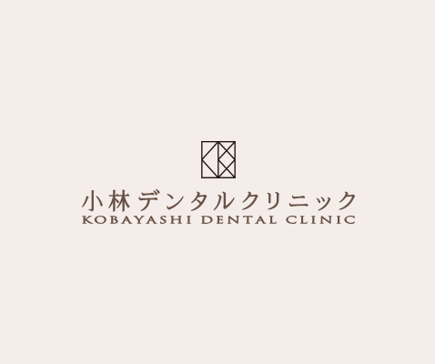

- ホーム
- 一般歯科
一般歯科General
大切な歯質を可能な限り保存します
私たちの歯は再生することのない組織です。虫歯になる度に歯質を大きく削っていては、歯の寿命もどんどん縮まっていきます。小林デンタルクリニックでは、患者さまの歯をできるだけ長く、健康に保つため、最小限の切削に努めております。虫歯になった原因を一緒に考え、再発するリスクも可能な限りゼロに近付けていきます。
治療の際に大切にしていること
生活習慣の改善から
今ある目の前の虫歯を削って、レジンを詰めることは難しくありません。比較的軽度であれば、その日に治療が完了します。けれども、虫歯になった根本的な原因を取り除かなければ、再び虫歯を発症します。なぜなら、虫歯は食生活や口腔ケア方法など、生活習慣とも密接に関連しているからです。
そこで当院では、虫歯を除去するのはもちろんのこと、“生活習慣の改善”という観点からも虫歯治療・予防にアプローチします。治療後の予防、ケア、メンテナンスもきめ細かくサポートいたします。
安心してご来院いただくために
-
保険診療もしっかり行っております

虫歯治療は、保険診療と自費診療のいずれかを選択することが可能です。自費診療では、審美性や耐久性、機能性に優れた詰め物・被せ物を製作することが可能ですが、患者さまのご負担が少々、大きくなります。一方、保険診療であれば、1～3割負担で治療を受けていただけます。どちらの治療が最適かは、患者さまによって大きく異なりますので、まずはお気軽にご相談ください。ちなみに当院では〇〇%の患者さまが保険診療を選択しております。
-
短期間の診療に尽力

当院では、患者さまのご負担をできる限り軽くするため、短期間での治療に努めております。とくに、遠方からお越しの患者さまに対しては、治療回数を減らす努力をいたします。かといって治療の質が低下するわけではありませんのでご安心ください。
虫歯の治療について
虫歯の原因とは

虫歯は細菌感染症の一種ですが、それ以外の要素も密接に関連しています。それは歯質と糖分です。酸によって溶けやすい歯、虫歯菌のエネルギー源となる糖分、歯を溶かす細菌が揃うことで、虫歯を発症するのです。
-
〇歯質

エナメル質、象牙質、セメント質から成る組織で、酸への抵抗力は石灰化度によって変化します。唾棄分泌の促進、フッ化物塗布によって歯の石灰化を促進することが可能です。
-
〇糖分

虫歯菌のエネルギー源となる栄養素です。糖分の多いおやつなどを頻繁に摂取すると、虫歯菌の活動が活発化します。
-
〇細菌

歯に感染して、歯質を溶かす原因菌です。歯垢や歯石を足場として歯面に付着します。口腔内を清潔に保てば、虫歯菌の量も自ずと現象します。
虫歯はこうして進行します
- 歯の表面に穴があきます
- 虫歯が神経に近付き冷たいものがしみます
- 歯の神経まで侵され、ズキズキ痛みます
- 神経が死んで痛みを感じなくなります
痛みが消失しても治ったわけではない？

虫歯が進行すると、痛みが消失しますが決して自然治癒したわけではありません。刺激を感知する神経が死んだだけなので、依然として虫歯は残存しています。早急に治療しなければ、さらに深刻な症状を招きます。
入れ歯の種類
虫歯や歯周病、外傷などで失った歯は、入れ歯で補うことができます。そんな入れ歯には、部分入れ歯と総入れ歯の2種類があります。
※表は左右にスクロールして確認することができます。
部分入れ歯 |
総入れ歯 |
|---|---|
|
|
|
| 部分的に歯を失った場合に適応される入れ歯です。人工歯と義歯床、留め具であるクラスプの3つから構成されます。 | すべての歯を失った倍に適応される入れ歯です。人工歯と義歯床から構成されます。口腔内への維持は、粘膜への吸着に依存します。 |
| 保険適用の場合 ⇒ 金属のクラスプ | 保険適用の場合 ⇒ 人工歯と床はレジン |
| 保険適用外の場合 ⇒ クラスプがない設計も可能 | 保険適用外の場合 ⇒ 金属床も選択可能 |

保険適用の場合

保険診療で使用できる材料は、人工歯と義歯床はレジン、クラスプは歯科用合金と決まっています。レジン製の床は、耐久性の問題から一定の厚みを確保するため、装着時の違和感が大きい、食べ物の熱を遮断しやすい、といったデメリットがあります。金属製のクラスプに関しては、目立ちやすいという欠点があります。
※表は左右にスクロールして確認することができます。
| メリット | デメリット |
|---|---|
|
|
保険適用外の場合

自費診療では、使用できる材料の選択肢が広がります。臭いを吸着しにくいセラミック、クラスプのない部分入れ歯、食事の熱を伝えやすい金属床などを選択することが可能です。審美性や機能性、耐久性まで追求したオーダーメイドの入れ歯を製作できます。
※表は左右にスクロールして確認することができます。
| メリット | デメリット |
|---|---|
|
|